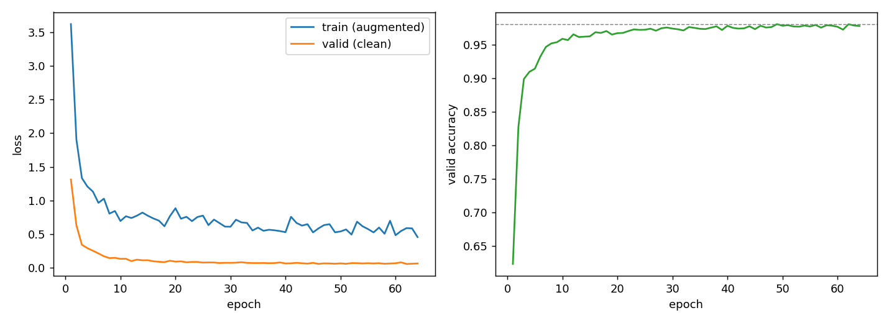
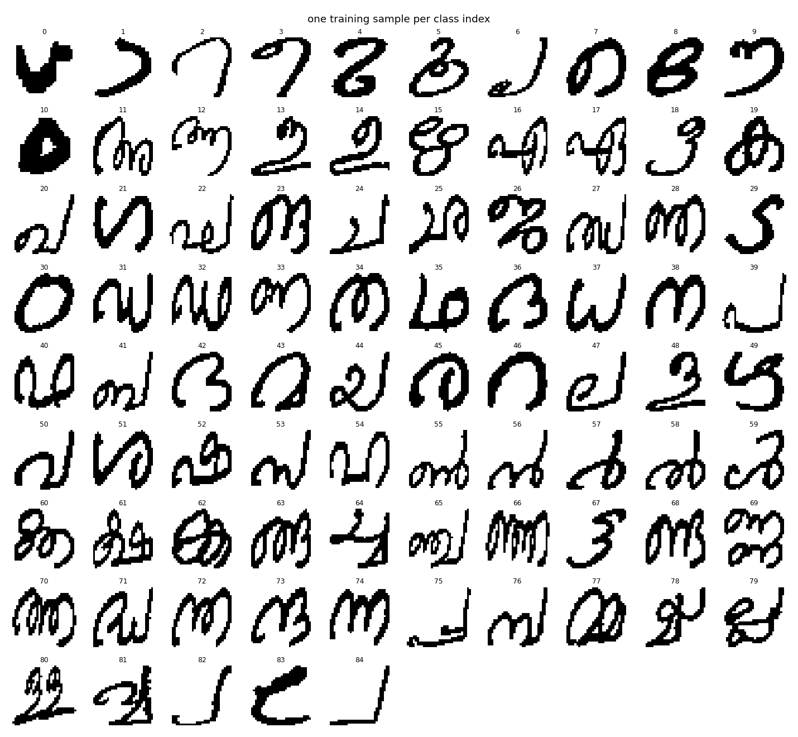

Malayalam has a lot of visually similar shapes, which makes flashcards a poor way in. Recognising a character is a different skill from producing one, so Aksharamala asks you to produce it: you draw the letter, and the classifier reads back whatever your stroke actually says. It reaches 94.5% test accuracy on handwriting from 18 writers the model never trained on, and ships as a static site with no backend at all.
The whole pipeline is seven files. Training runs locally, and export freezes the network into an ONNX graph that is verified against PyTorch before anything ships. The app then loads that 2.8 MB graph plus a labels file straight into the browser, where every prediction runs on the visitor's own machine. A drawing never leaves it.
Technical implementation
The network
A plain VGG-style stack. Convolutional blocks double in width while max-pooling takes the image from 32×32 down to 4×4, and dropout then feeds a small dense classifier. There is no batch norm and no residual connection. At this input size and dataset scale neither one buys anything worth the extra surface area.
model = nn.Sequential(
# block 1: two 3x3 convs at 32 filters, then halve to 16x16
nn.Conv2d(1, 32, 3, padding=1), nn.ReLU(),
nn.Conv2d(32, 32, 3, padding=1), nn.ReLU(),
nn.MaxPool2d(2),
# block 2: widen to 64 as the map shrinks, then halve to 8x8
nn.Conv2d(32, 64, 3, padding=1), nn.ReLU(),
nn.Conv2d(64, 64, 3, padding=1), nn.ReLU(),
nn.MaxPool2d(2),
# block 3: one 128-filter conv is enough this deep, down to 4x4
nn.Conv2d(64, 128, 3, padding=1), nn.ReLU(),
nn.MaxPool2d(2),
nn.Flatten(),
nn.Dropout(0.5), # the single biggest accuracy lever, see below
nn.Linear(128 * 4 * 4, 256), nn.ReLU(),
nn.Linear(256, 85), # 85 character classes, logits out
)
criterion = nn.CrossEntropyLoss()
optimizer = torch.optim.Adam(model.parameters(), lr=0.001)Data and augmentation
The dataset arrives as three CSVs of flattened 32×32 binarised images. Loading takes a few lines, two of which quietly encode a property of the file format that the CSVs never advertise. That one is covered under challenges below.
raw = pd.read_csv(DATA_DIR / f"Handwritten_V2_{name}.csv", header=None).to_numpy("float32")
# pixels are stored column-wise, so reshape then transpose, or every image loads sideways
x = torch.from_numpy(raw[:, 1:]).view(-1, 1, 32, 32).transpose(2, 3)
y = torch.from_numpy(raw[:, 0]).long() - 1 # labels are 1-indexed in the fileAugmentation runs per batch and is built around what actually varies in handwriting. Small affine jitter plus an elastic warp bend the strokes the way an unsteady hand does, and random dilation or erosion stands in for pen pressure. A final threshold puts the image back into the binary domain the model trains on.
augment = v2.Compose([
v2.RandomAffine(degrees=8, translate=(0.08, 0.08), scale=(0.9, 1.1), shear=5),
v2.ElasticTransform(alpha=20.0, sigma=4.0), # stroke wobble
v2.RandomApply([v2.Lambda(lambda t: F.max_pool2d(t, 3, 1, 1))], p=0.25), # thicker pen
v2.RandomApply([v2.Lambda(lambda t: -F.max_pool2d(-t, 3, 1, 1))], p=0.25), # thinner pen
v2.Lambda(lambda t: (t > 0.5).float()), # re-binarise
])Training
75 epochs cap, batch size 64, Adam at 1e-3, and early stopping after 15 epochs without validation improvement. The checkpoint written to disk is always the best validation epoch, so a late dip in training can never follow the model into export. Training loss is measured on augmented batches while validation loss is measured on clean images, so read the trend of the two curves and ignore the absolute gap between them.

Results
| Split | Accuracy |
|---|---|
| Train | 99.1% |
| Validation | 98.1% |
| Test (held-out writers) | 94.5% |
| Test, top-5 | 99.6% |
Getting there: baseline 88.3% → augmentation 92.7% → dropout 94.3–95.2%. Run-to-run variation at a fixed configuration is about ±1 point, so treat any difference smaller than that as noise.
The remaining errors concentrate in visually similar character pairs, which is a property of the script itself. Top-5 accuracy of 99.6% says the network nearly always has the right answer in mind. It just cannot always pick between near-identical shapes.

Challenges and solutions
Overfitting
Problem. The baseline network memorised its training writers: near-perfect train accuracy against 88.3% on held-out ones.
Solution. Augmentation first, which bought 4.4 points by making the model tolerate shape and thickness variation it had never seen. Dropout at 0.5 before the dense head bought another 1.6–2.5 on top of that. Early stopping on validation accuracy then keeps the saved checkpoint from drifting past its best point.
Train/serve parity
Problem. This is the classic way a model scores well in the notebook and feels broken in the browser: the two sides preprocess differently.
Solution. Training images are cropped to the ink bounding box and stretched
to 32×32 without preserving aspect ratio, then binarised at a threshold of 128.
app/app.js does exactly the same to the canvas before inference, down to that
threshold. One canvas-specific adjustment remains: scanned ballpoint strokes are heavier than
a downsampled mouse line, so if ink coverage falls below MIN_INK (0.12, against a
dataset mean of 21.5%) the image is dilated once. MIN_INK and PEN
are the knobs to tune if predictions feel wrong on real drawings.
Two undocumented properties of the dataset
Both cost a debugging session, and neither is stated in the CSVs:
- Pixels are vectorised column-wise. A row-major
reshapeloads every image transposed, and the model will train perfectly happily on sideways characters, so nothing fails loudly. - The class label order is not the order of Table 1 in the source paper. The
mapping in
glyphs.pywas recovered by matching that paper's Table 3 per-class counts against the CSVs; 16 indices are anchored exactly, and the conjunct block's interior follows Table 1 order without individual verification.
Getting it into the browser
The export step checks its own work. export.py writes the ONNX graph, then runs
a real test batch through both PyTorch and ONNX Runtime and asserts that the outputs match to
1e-5 and agree on every argmax. Numerical drift fails the export loudly at that point, well
before it can reach a visitor.
onnx_out = onnxruntime.InferenceSession("model.onnx").run(None, {"input": x.numpy()})[0]
assert np.allclose(torch_out, onnx_out, atol=1e-5), "ONNX output drifted from PyTorch"
assert (torch_out.argmax(1) == onnx_out.argmax(1)).all(), "ONNX predicts a different class"Known limitations
- The writer pool skews heavily female (60 of 77) and is adults-only with at least graduate education, so generalisation to children's or less practised handwriting is untested.
- Training data is scanned pen-on-paper; the app feeds it uniform digital strokes. The preprocessing above narrows that gap but does not close it.
- 26% of the model's mistakes are made above 0.9 confidence. High confidence is not a guarantee, and the UI should not present it as one.
Dataset
Amrita_MalCharDb: 85 character classes, 29,302 images from 77 native Malayalam writers, scanned ballpoint on paper, segmented with active contour models and binarised to 32×32. The dataset is not redistributed in the repository; it is available from the authors on request.
K. Manjusha, M. Anand Kumar, K.P. Soman, “On developing handwritten character image database for Malayalam language script”, Engineering Science and Technology, an International Journal 22 (2019) 637–645. doi:10.1016/j.jestch.2018.10.011